MY PORTFOLIO
Here are my activities and photographs in Photojournalism
Click on the images to make them bigger
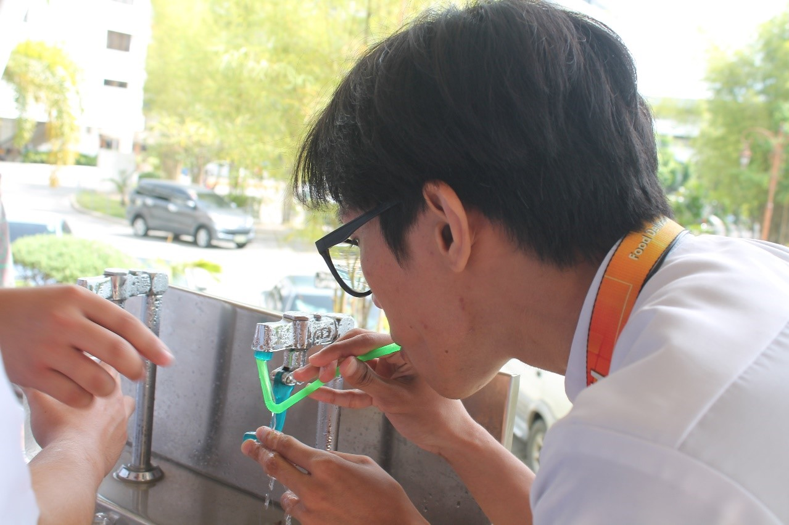 Be accurate and comprehensive in the representation of subjects">
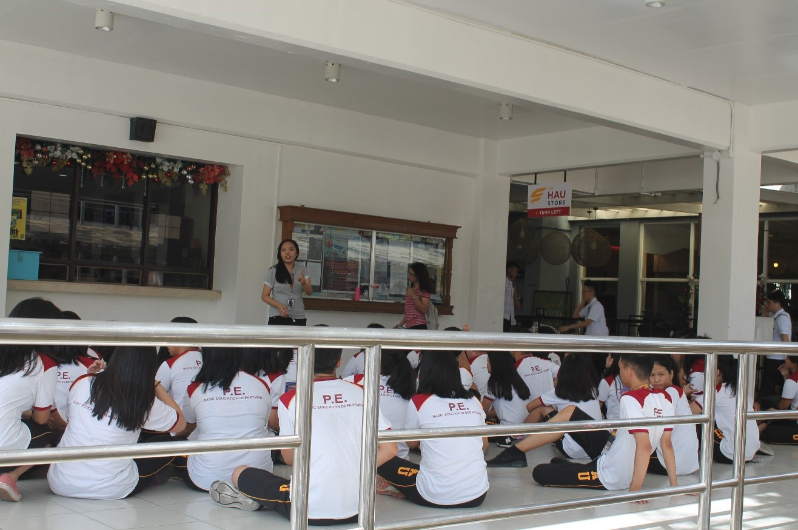 Resist being manipulated by staged photo opportunities">
Be complete and provide context when photographing or recording subjects. Avoid stereotyping individuals and groups. Recognize and work to avoid presenting one's own biases in the work">
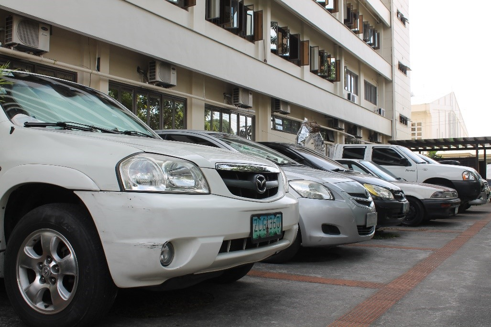 Treat all subjects with respect and dignity. Give special consideration to vulnerable subjects and compassion to victims of crime or tragedy. Intrude on private moments of grief only when the public has an overriding and justifiable need to see">
While photographing subjects do not intentionally contribute to, alter, or seek to alter or influence events">
Editing should maintain the integrity of the photographic images' content and context. Do not manipulate images or add or alter sound in any way that can mislead viewers or misrepresent subjects">
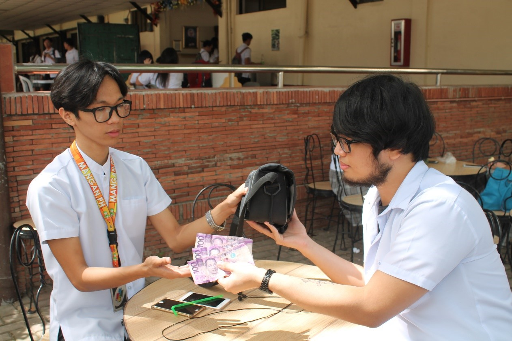 Do not pay sources or subjects or reward them materially for information or participation">
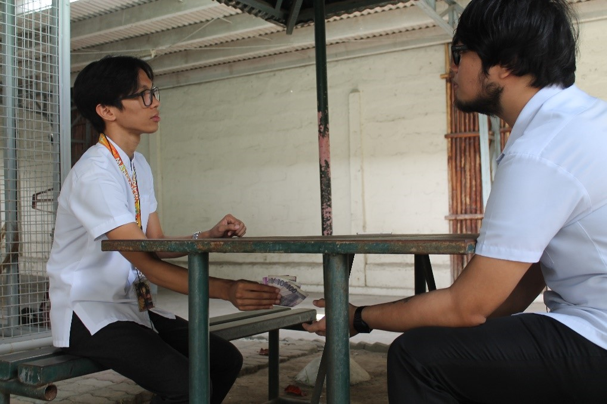 Do not accept gifts, favors, or compensation from those who might seek to influence coverage">
Do not intentionally sabotage the efforts of other journalists">
Do not engage in harassing behavior of colleagues, subordinates or subjects and maintain the highest standards of behavior in all professional interactions">
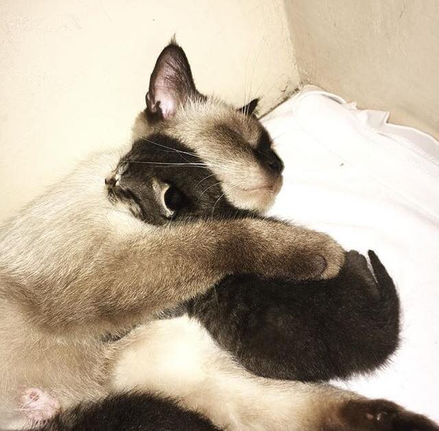 A mother cat holding its kitten closely, in fear of losing its little one">

A college student feeling sad after realizing that he and his crush won’t be together">
A group of college students spending time together">
A college student cringing at himself after remembering his past mistakes">
A college student feeling shocked after seeing a beautiful nursing student">
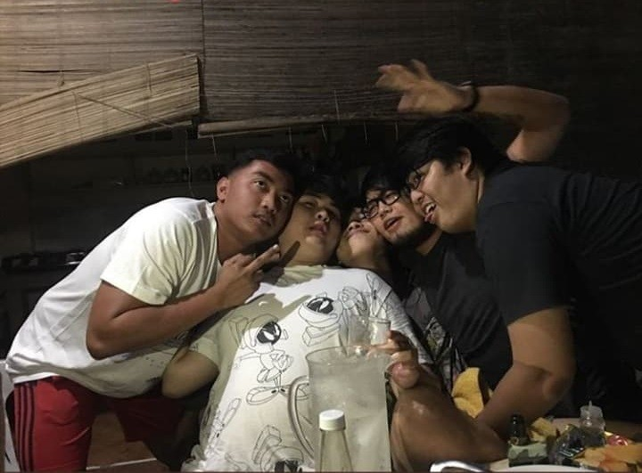A group of friends expressing their trust towards each other">
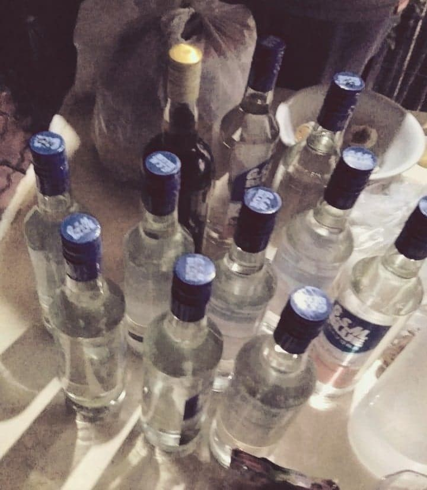 A photo anticipating a group of friends’ night out">
A place where great sights and bad thoughts are worn">
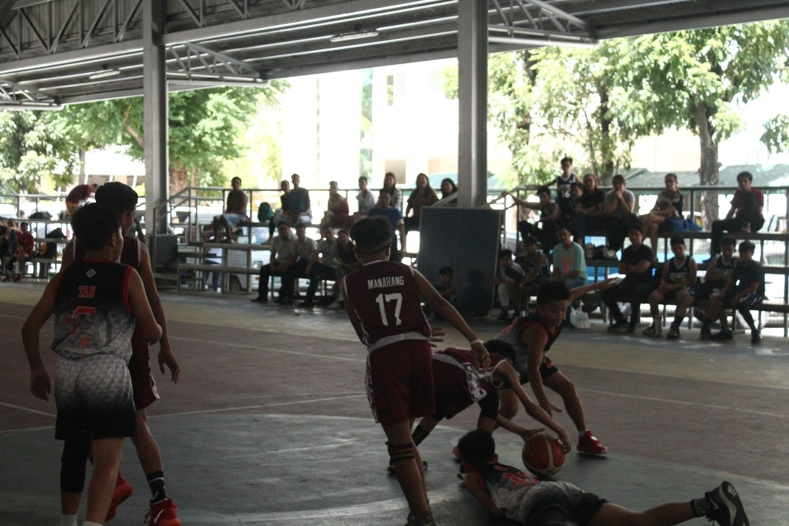
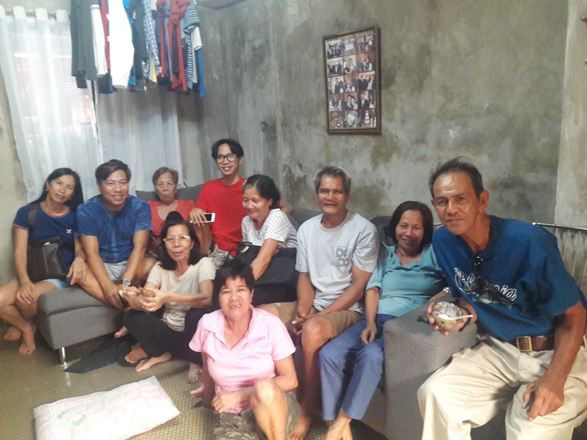
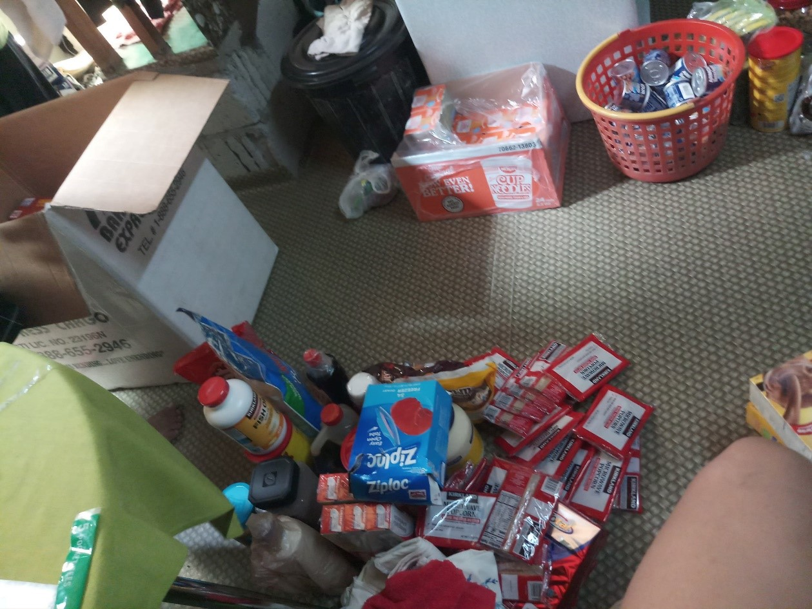
Tennis Practice Game
A tennis player at Holy Angel University Gym ready himself to hit the ball by holding his racket in a backhand grip position">
A tennis player at Holy Angel University Gym ready himself to hit the ball by holding his racket in a backhand grip position">
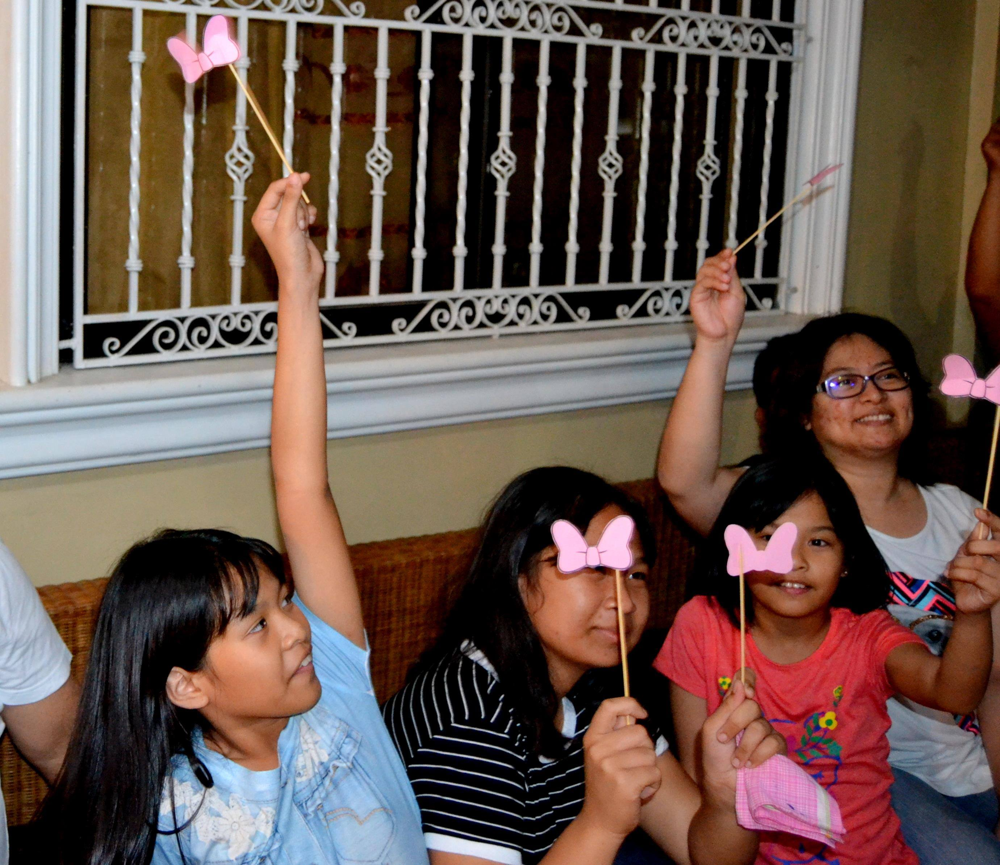 Gender Reveal Party
These family members celebrates gender reveal party. The three kids from the left are the niece of the celebrant and the auntie (on the right end). They (the four women) raise the pink ribbon with stick as a symbol of the baby gender, which is a girl">
These family members celebrates gender reveal party. The three kids from the left are the niece of the celebrant and the auntie (on the right end). They (the four women) raise the pink ribbon with stick as a symbol of the baby gender, which is a girl">